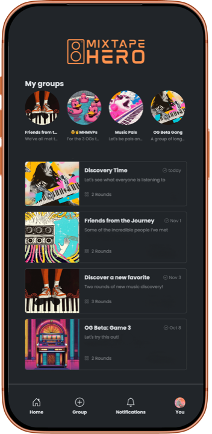

2016 – 2025
- PostgreSQL
- Cloud-native
- Consumer social
- Spotify API
- Web / iOS / Android
- Solo operator
Music League
Founder · sole engineer and operator
A social music game. You join a league with friends, each round has a
theme, everyone submits a song, and then you all listen to the
anonymous playlist and vote. Points accumulate across rounds; the best
curator wins. It became the thing a lot of friend groups, work teams,
and Discord servers did together every week.
-
Grew from zero to hundreds of thousands of users across six
continents as the only engineer.
-
Owned everything for nine years: programming, infrastructure, cost
management, customer support, hiring, and 24/7 on-call.
-
Onboarded and managed two business partners, and managed contractors
as the product grew.
-
Covered by The Verge as an antidote to algorithmic music discovery,
and featured on Australia's Double J.
- Sold my ownership stake in 2025.
2025 – present
- PostgreSQL
- Spotify API
- Apple Music API
- Consumer social
- Mobile & web

Mixtape Hero
Co-founder
Share songs, not algorithms. Mixtape Hero is music discovery through
friends instead of feeds: pick a theme, everyone adds a track straight
from their own Spotify or Apple Music library, listen and vote, then
see the reveal of who picked what.
-
Everything plays through the player's existing streaming
subscription — no hosted music, no uploads, no touching their
library.
-
Built for the way groups actually hang out: friend groups, work
teams, Discord servers.
-
Free to play with optional boosts for larger games, extra voting
rounds, and special themes. No ads, no data sales, no payouts between
players.
-
A second run at the idea behind Music League, with nine years of
operating lessons behind it.
HashiCorp · 2024 – 2025
- Knowledge graph
- Event-driven APIs
- Multi-tenancy
- AWS IAM
- Hybrid cloud
Project Infragraph
Lead engineer
A real-time knowledge graph of infrastructure. Infragraph unifies
resources, applications, ownership, and policy across hybrid cloud
environments into a single queryable source of truth — the normalized
context layer that AI agents and automation need before they can safely
operate against someone's production estate.
-
Architected support for first-party and third-party data connectors
hosted both in cloud and on-premise.
-
Used AWS IAM primitives and storage isolation to host multi-tenant
graph data with a separated control plane and data plane.
-
Defined the event-driven APIs that let downstream agents and
automation react to infrastructure changes, with the hard constraints
being consistency guarantees and query performance at enterprise
scale.
-
Led the team to internal alpha ahead of schedule with additional
features, working directly with Product and early customers to shape
the feature set.
-
Led the engineering team through HashiCorp's acquisition by IBM and
the internal integrations that followed.
Workiva · 2019 – 2022
- Kubernetes
- Controllers & CRDs
- KMS
- MySQL
- FedRAMP
Bring Your Own Key
Lead engineer and architect
Enterprise customers filing with the SEC don't want to take anyone's
word about encryption — they want to hold the key and be able to revoke
it. Bring Your Own Key gave Workiva's customers control of the
encryption keys protecting their data, across a platform built for SOX
compliance and FedRAMP authorization.
-
Designed and built a custom Kubernetes controller and CRDs to manage
per-customer key material and its lifecycle.
-
Extended the encrypted blob storage layer I'd previously built so
customer-managed keys covered both object storage and MySQL.
-
Ran proofs of concept against multiple key management vendors,
evaluating integration, security, and operational tradeoffs before
committing to a production architecture.
-
Worked directly with security teams at Fortune 100 companies and
large institutional banks through their review processes.
Workiva · 2017 – 2019
- Encryption at rest
- Object storage
- Google App Engine
- Performance
Encrypted Blob Storage
Lead engineer
The storage layer underneath Workiva's documents and spreadsheets, with
encryption built into the data path rather than bolted on. The hard
part wasn't encrypting bytes — it was doing it without paying a latency
tax on a product where every keystroke touches storage.
-
Built encryption at rest into the blob path with a focus on both
security posture and read/write performance.
-
Became the foundation that Bring Your Own Key was later built on,
which is the real test of a storage abstraction: it held up when the
key ownership model changed underneath it.
-
Built during the same stretch as the distributed consistency work for
Linking, which guarantees strong consistency for SEC filings, and the
calculation engine work that cut operating costs 20% on Google App
Engine.
Curious about any of these?
Happy to go deeper on any of it — the architecture, the tradeoffs, or the
parts that went badly first.